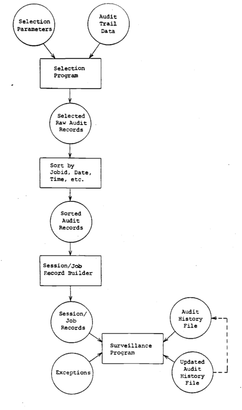

Structure Of A Surveillance System
Description
This section is from the book "Computer Security Threat Monitoring And Surveillance", by James P. Anderson.
Structure Of A Surveillance System
Introduction
This section outlines the functional components of a security monitoring and surveillance system. It identifies the key programs that will be required and considers a number of alternatives in implementing such a design. Figure 4 is a diagram of the central function of a surveillance system. It shows elements for the automatic generation of security exception reports.
Monitoring Of Users
The diagram. Figure 4, shows the major steps involved in producing the monitoring and surveillance system data files. The first step is the selection of audit records affecting the element or elements being audited. This step is included in the overall design on the premise that the ability to keep history records for a large number of users will be storage limited. The second reason for including this is the premise that most use of a system is benign and proper and that for large populations, the bulk of the population is not of interest to the security personnel at any one time. In practice, a security office may have 50-100 "cases" in which they are interested. Some of these cases may be merely random selections from the total user population to be audited for a period of time, not with the intent of finding any wrong-doing, but with the intent of determining any possible wrong-doing.
Sorting Audit Records
The audit records selected in the previous step are then sorted on, a user identifier, and then within that, job identifier, date, time and so forth. The purpose of the sort is to collect together all records constituting a job. In most audit systems the job is represented by a number of audit records; job initiation, job termination, job execution, etc. The information of interest may be distributed over all the different kinds of records. The output of the sort is used as input to a program that builds session records.
Figure 4 Surveillance System.
Session Record Builder
Whether or not a session record builder is required, is a function of the type of audit data that is collected and possibly the type of system being employed. The model constructed as part of the project to determine the feasibility and the difficulty of doing surveillance of this type was based on a time sharing which provided a variety of records that required processing of all the records for a particular session in order to determine how much input and output had occurred. Other systems accumulate this information and make it available as part of a record identifying the termination of a job or program or as part of a program summary. The need for this step is a function of the underlying audit recording system for which it is built.
Surveillance Program
In some respects this is the heart of the system in that to performs a variety of functions. In the prototype or model system, the surveillance system performs the following functions: It accumulates all instances of the same kind of job where job is defined in this case as having same program and file reference set involved (see 3.6).' As it considers each job (or session) it compproz the -ri^-rcsp.e.^^r^ n^p.sured or. ft. session; that is the connect time, the number of input - output characters, the numbers of file references, etc., against a set of absolute limits. The absolute limits were arbitrarily chosen by taking statistics over a large member of users and setting the limits such that it would cause an exception report if an individual session was unusual in and by itself.
In addition to the absolute limits, an individual session record is subject also to the distribution test. Distribution tests are those elements that are single values treated as samples, compared against distribution represented by the mean and the standard deviations of those means. If any of the parameters measured are greater than 2.58 standard deviations from the mean in either direction, the session record is reported as an exception. After these two operations are performed the session record is accumulated with all others like it and statistics for the set are available. Nothing is done with these statistics in prototype program. However, a similar measure could be employed to say how does the mean of all of the individual runs for this day compare with the accumulated mean, etc. Finally the history master record is updated with the session summary data and the process repeated for the next set of session records.
In order to minimize file passes, the surveillance program recognizes when a master record has not been updated in fifteen days. This is an arbitrary time period established for the model program that is used to keep the history file at a reasonable size. In the event it finds such a record that has not been updated in fifteen days, it is removed from the history records, and reported as a record dropped for.lack of activity.
Obviously with the records being dropped and added the other consideration is that a previous history record does not exist for a particular user. In this case, new master records are created and inserted in the correct place. No statistical reporting or distribution tests are performed in this case, but the absolute limits tests are recorded. In order to provide the security officer with some notion of what is going on, an exception report item is created for the session summary records that indicates that a new history master record is being created, and the new master record is available for display as part of the exception reporting.
The entire sequence outlined above of selecting records of interest sorting them creating session summaries, updating master and the like and adding to the exception report is run once a day at the time the accounting files are turned over. The exception records are accumulated until such time as the reports are actually prepared. A sample of the reports from the model system are shown in figures 6,7,8 and 9.
Continue to:
- prev: Time Parameters
- Table of Contents
- next: Monitoring Files